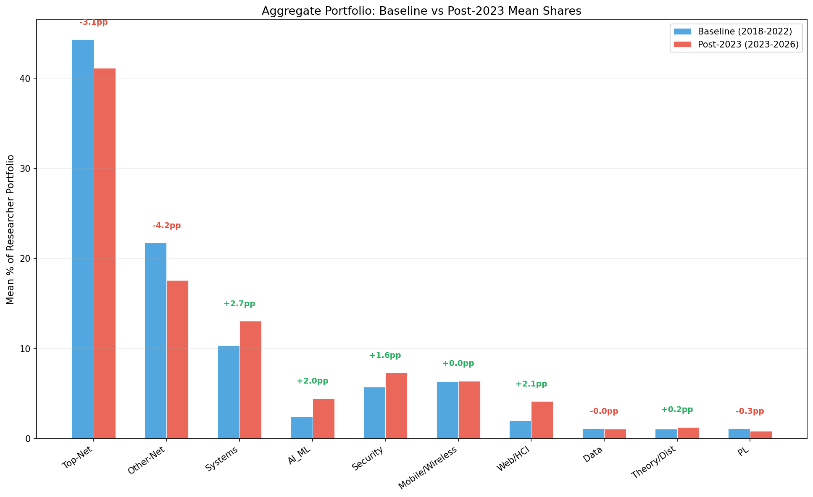
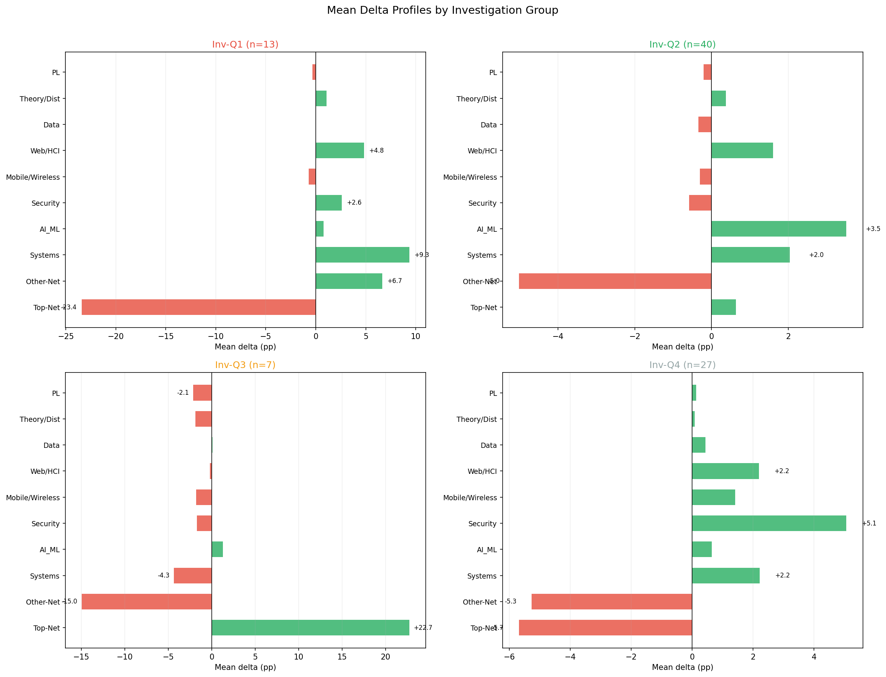
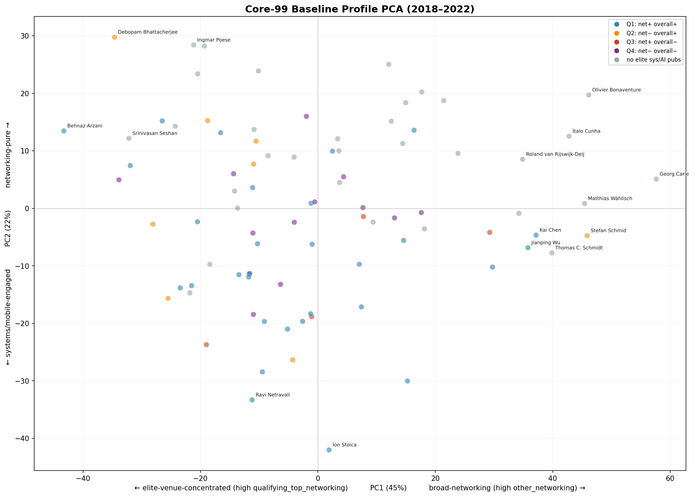
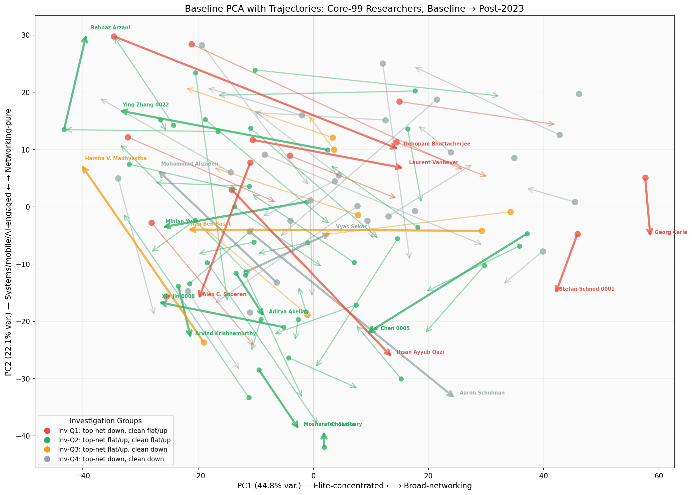
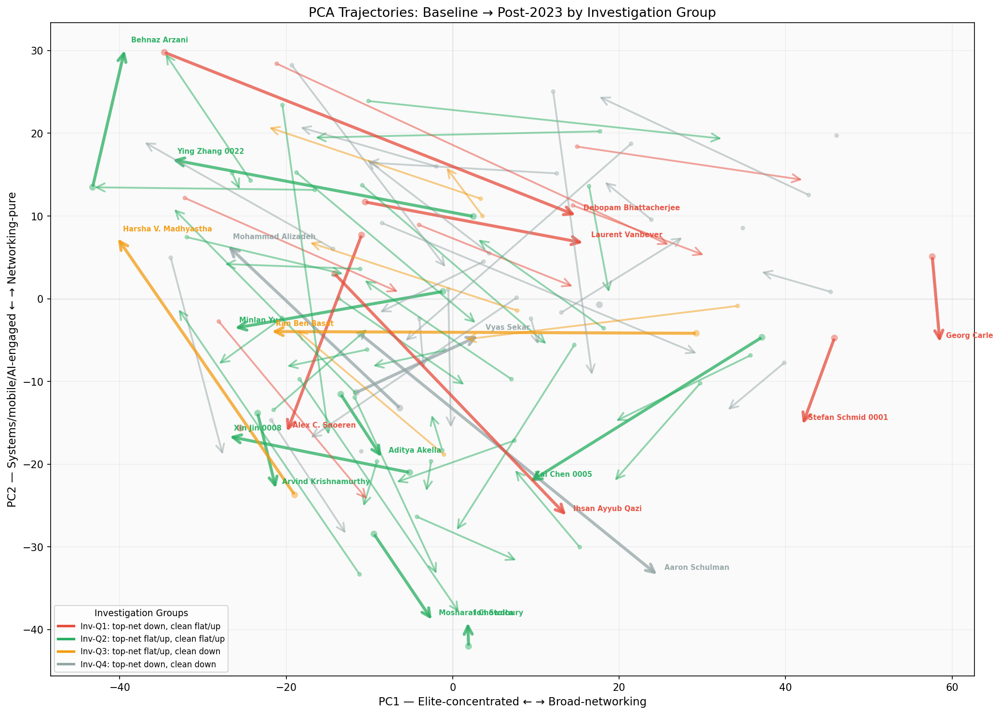
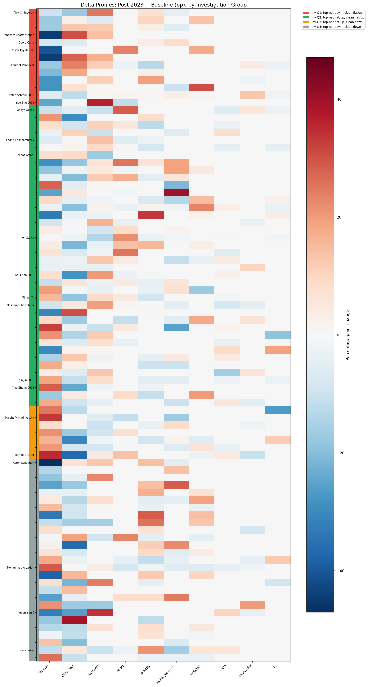
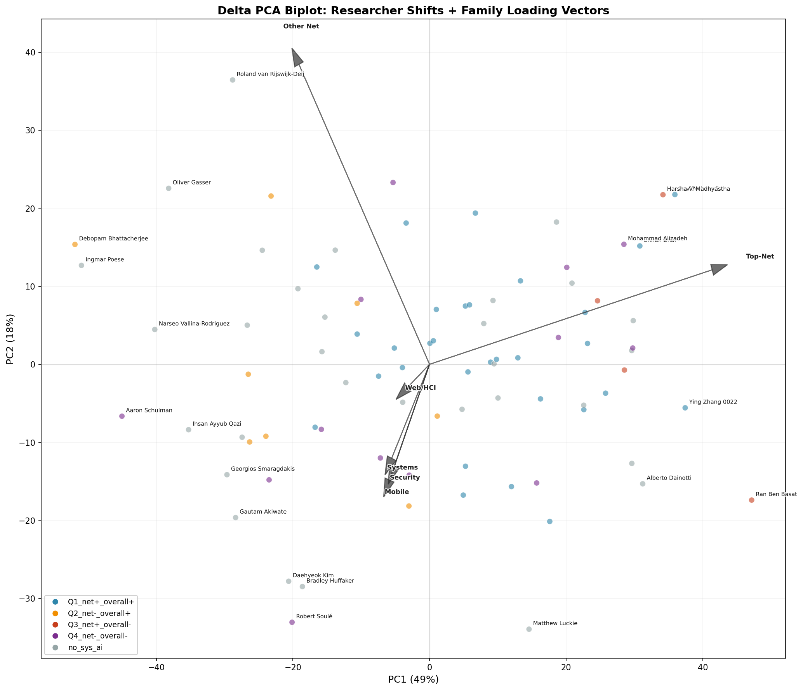
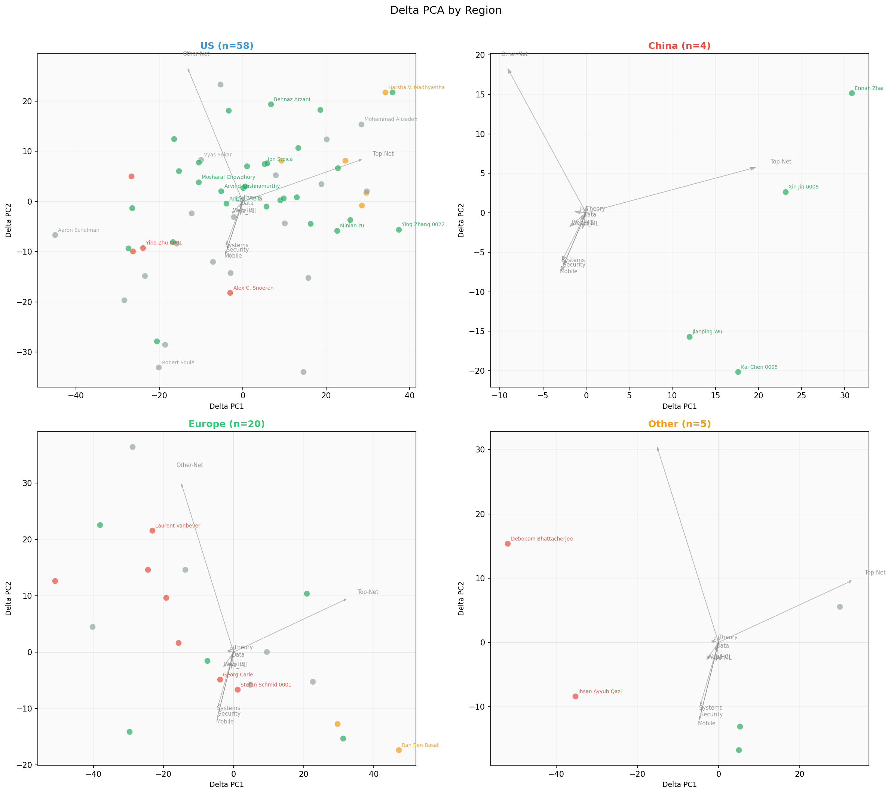
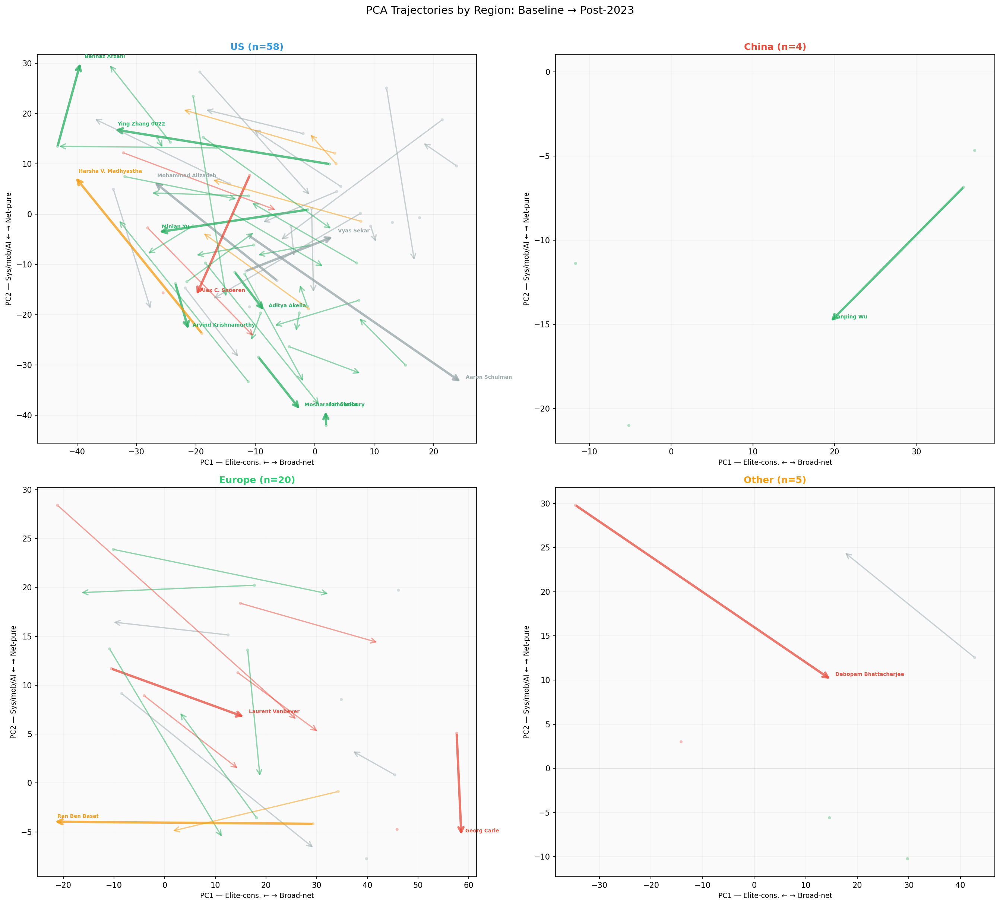
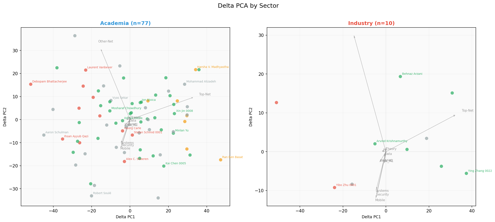

核心 99 人分析报告 顶级网络会议研究者的发表轨迹（2018–2026）
执行摘要
核心发现
- 顶级网络会议参与并非整体消失，而是在研究者之间重新分配。 核心 99 人每年参与的独特论文数量基本稳定（基线期 ~113 篇/年 vs 后期 ~114 篇/年），但作者-论文参与量从 906 次降至 619 次，说明同一论文上多位核心 99 人共同署名的密度在下降。
- 49% 的可分析研究者正在退出顶级网络会议。 87 位可分析研究者中，43 位（Inv-Q1 + Inv-Q4）在 SIGCOMM、NSDI、CoNEXT、HotNets、IMC 这五个顶级会议上的参与率显著下降。其中 Inv-Q1（15 人）在其他方向有替代性发表，Inv-Q4（28 人）则呈现全面衰退。
- 稳定核心（Inv-Q2，40 人）维持了绝对顶级网络会议产出。 他们在顶级网络会议上的作者-论文参与量几乎不变（381→391），但其占后期总参与量的份额从 42% 升至 63%——这主要是其他组退出造成的份额重分配，而非 Inv-Q2 自身的扩张。
- AI/ML 和系统方向的扩张是真实的，但高度集中且主要面向 AI 基础设施，而非核心 AI 研究。 仅 9 位研究者的 AI/ML 会议份额增长超过 10 个百分点。这些人的论文绝大多数是关于分布式训练、LLM 推理、GPU 优化等为 AI 服务的系统工作，而不是模型架构或学习理论。唯一的明确例外是 Ihsan Ayyub Qazi，他从网络研究迁移到了应用 NLP/HCI。
- 中国研究者（n=4）展现出最强的顶级网络会议集中趋势，而非退出。 人均顶级网络会议份额上升 14.4 个百分点，同时放弃低层级会议。美国研究者（n=58）的变化温和且分散；"其他"地区（n=5）展现出最大的 AI/ML 和 Web/HCI 扩张。
- 行业研究者（n=10）展现出以系统方向为主的增长模式。 人均系统会议份额增长 8.2 个百分点，顶级网络会议份额基本持平，主要以 AI 基础设施工作为主。
关键解释
- 所谓的"AI 迁移"对大多数核心 99 人而言，意味着为 AI 构建分布式系统（训练、推理、调度），而非成为 AI 研究者。这个信号更多被系统会议（EuroSys、OSDI、ASPLOS）和 MLSys 捕获，而非被 NeurIPS/ICML 捕获。
- 观察到的相当一部分"衰退"可能反映了职业生涯阶段变化、行业转型、期刊发表转向或DBLP 索引滞后，而非真正的研究方向退出。12 位被排除的低产出研究者中包括一些领域内最有影响力的名字。
- 顶级网络会议整体规模在扩大（DBLP 收录量增长），但核心 99 人的独特论文数持平，这意味着新研究者在填补空间——这一代际更替尚未在本分析中量化。
主要不确定性
- 2026 年 DBLP 数据不完整，系统性地压低了后期年化产出率。
- 缺乏系统性的论文主题分类——目前仅基于会议归属，无法区分"发表在 ML 会议上的系统论文"和"核心 ML 研究"。
- 12 位低产出排除者的故事（退休、行业、数据滞后）尚未被系统分析。
- 尚无回归均值检验——核心 99 是在其顶峰期（≥7 篇顶级网络论文）被选出的，部分后续下降是统计预期内的。
1. 分析背景与核心问题
2018 至 2022 年间，有一批研究者在 SIGCOMM、NSDI、CoNEXT、HotNets、IMC 这五个顶级计算机网络会议上持续发表。随着 2023 年后 AI 和系统领域的快速扩张，一个自然的问题浮现：这些曾经活跃的顶级网络会议研究者，现在去了哪里？
这个问题可以拆解为若干更具体的追问：
- 他们的顶级网络会议参与是否在整体下降？
- 如果是，下降是均匀分布还是集中在某些人身上？
- 那些退出顶级网络会议的人，在其他方向的发表是否能解释这种退出？
- 那些保持或增强顶级网络会议参与的人有什么特征？
- 是否存在向 AI/ML、系统或其他方向的迁移？如果有，这种迁移是"成为 AI 研究者"还是"为 AI 构建系统"？
- 中国、美国、欧洲等不同地区的研究者是否有不同的轨迹？
本报告以数据驱动的方式逐步回答这些问题。它首先定义分析对象和测量方法，然后从最宏观的聚合模式出发，逐步深入到分组差异、个体轨迹、以及需要谨慎解读的边界情况。
2. 数据范围与分析队列
2.1 核心 99 人定义
分析对象是从 3,571 位曾在 2018–2022 年间至少在 SIGCOMM、NSDI、CoNEXT、HotNets 或 IMC 上发表过一篇论文的研究者中筛选出的高信号子集。
核心 99 人的入选标准：在 2018–2022 年基线期内，在上述五个会议（合称"合格顶级网络会议"）上的论文数 ≥ 7。
这 99 人按分析可用性进一步划分为：
| 类别 | 人数 | 说明 |
|---|---|---|
| 可分析核心 | 87 人 | 在两个时期均有 ≥ 5 篇干净会议论文，可构建稳定的百分比向量 |
| 低后期产出的排除者 | 12 人 | 2023–2026 年干净会议论文少于 5 篇，百分比向量不稳定（一篇论文可改变 20pp 以上的份额） |
2.2 特征构建
每位可分析研究者被赋予两个核心特征层：
静态组合特征
每个研究者的发表组合被映射为一个 10 维的会议家族百分比向量。会议被归入以下家族：
| 家族 | 示例会议 |
|---|---|
qualifying_top_networking | SIGCOMM、NSDI、CoNEXT、HotNets、IMC |
other_networking | INFOCOM、ICNP、PAM、TMA、ANRW、APNet |
systems | OSDI、SOSP、EuroSys、USENIX ATC、ASPLOS、SoCC、MLSys |
AI_ML | ICML、ICLR、NeurIPS、AAAI、CVPR、ACL |
security_privacy | USENIX Security、IEEE S&P、CCS、NDSS |
mobile_wireless_iot | MobiCom、MobiSys、SenSys、IPSN |
web_social_hci | WWW、CHI、ICWSM |
data_management | SIGMOD、VLDB、ICDE |
theory_distributed | PODC、DISC、SPAA、ICDCS |
programming_languages | PLDI、POPL、OOPSLA |
每个时期每个家族的份额 = 该家族论文数 / 该时期总干净会议论文数 × 100。这一归一化处理使不同产出量的研究者可比。
方法 使用百分比而非原始计数，是因为研究者的发表量差异巨大（从十几篇到上百篇）。一篇系统论文对一位 10 篇论文的研究者而言是 10pp 的变化，对一位 100 篇论文的研究者而言只有 1pp。百分比控制了体量，使组合变化可比。动态特征与研究分组
针对每位研究者计算两个年化率比：
- 顶级网络率比 = (后期顶级网络论文数 / 4) / (基线顶级网络论文数 / 5)
- 干净发表率比 = (后期干净论文数 / 4) / (基线干净论文数 / 5)
趋势标签使用确定性阈值：ratio ≥ 1.25 为"增长"，≤ 0.75 为"下降"，介于之间为"持平"，后期计数为 0 则为"2022 年后无活动"。
注意 后期分母统一为 4（2023–2026），但 2026 年数据尚不完整。这系统性地压低了后期年化率——对于 2026 年无论文的研究者，实际观测年数为 3 却除以 4，导致率值偏低约 25%。📐 技术细节：年化率计算与阈值
选择 1.25/0.75 阈值（而非 1.0）是为了将小幅波动归类为"持平"而非"增长/下降"。这些阈值尚未针对队列中率比的分布进行校准。接近边界的值（如 0.76 vs 0.74）会产生不同分组——应将这些边界附近的研究者视为分组不稳定的。
固定 4 年后期分母是当前限制：2026 年 DBLP 索引尚不完整（SIGCOMM 2026 和 CoNEXT 2026 尚未举行）。计划采用动态年份校正，以每位研究者实际可用的观测年数为分母。
2.3 研究分组
以两个率特征为轴，将 87 位可分析研究者分为四个研究组（Inv-Q1 至 Inv-Q4）：
| 组 | 顶级网络率 | 干净发表率 | 通俗含义 | 人数 |
|---|---|---|---|---|
| Inv-Q1 | 下降 | 持平或增长 | 顶级网络下降速度快于整体产出 | 15 |
| Inv-Q2 | 持平或增长 | 持平或增长 | 强劲或稳定的可见会议存在 | 40 |
| Inv-Q3 | 持平或增长 | 下降 | 顶级网络相对于其他产出得到维持 | 7 |
| Inv-Q4 | 下降 | 下降 | 可见会议产出的广泛衰退 | 28 |
3. 第一层观察：整体图景
在进入分组分析之前，先看三个最直接的聚合测量。它们按细节递增排列：内部组合份额 → 绝对参与量 → 在顶级会议中的代表性。
3.1 研究者内部组合份额
这张图帮助我们判断：平均而言，一位核心研究者的发表组合是否发生了显著变化？变化发生在哪些方向？

应优先观察：合格顶级网络会议（深蓝）和其他网络会议（浅蓝）在后期均下降；系统（绿）和 AI/ML（橙）小幅上升；但 AI/ML 的中位数在前后期均为 0%。
解读注意：这是人均百分比均值。AI/ML 的均值从 2.4% 升至 4.4%，但中位数保持在 0%——扩张集中在少数人身上，不是队列范围的转变。
| 家族 | 基线均值 | 后期均值 | 均值变化 | 基线中位数 | 后期中位数 |
|---|---|---|---|---|---|
| 合格顶级网络 | 44.3% | 41.1% | −3.1pp | 44.9% | 38.5% |
| 其他网络 | 21.7% | 17.6% | −4.2pp | 16.7% | 11.8% |
| 系统 | 10.4% | 13.0% | +2.7pp | 6.7% | 6.7% |
| AI/ML | 2.4% | 4.4% | +2.0pp | 0.0% | 0.0% |
| 安全隐私 | 5.7% | 7.3% | +1.6pp | 2.8% | 0.0% |
| 移动无线IoT | 6.3% | 6.4% | +0.0pp | 0.0% | 0.0% |
| Web/社交/HCI | 2.0% | 4.1% | +2.1pp | 0.0% | 0.0% |
3.2 绝对作者-论文参与量
这张表帮助我们判断：百分比变化背后是真实的体量转移还是分母效应？如果网络论文的绝对数量在减少，那么百分比下降反映的是真实的撤退。
| 家族 | 基线参与量 | 后期参与量 | 变化 | 年化基线 | 年化后期 |
|---|---|---|---|---|---|
| 合格顶级网络 | 906 | 619 | −287 | 181.2/年 | 154.8/年 |
| 其他网络 | 655 | 307 | −348 | 131.0/年 | 76.8/年 |
| 系统 | 270 | 253 | −17 | 54.0/年 | 63.2/年 |
| AI/ML | 78 | 109 | +31 | 15.6/年 | 27.2/年 |
| 安全隐私 | 148 | 110 | −38 | 29.6/年 | 27.5/年 |
| 移动无线IoT | 161 | 102 | −59 | 32.2/年 | 25.5/年 |
| Web/社交/HCI | 65 | 93 | +28 | 13.0/年 | 23.2/年 |
3.3 核心 99 人在顶级网络会议中的份额
这张表帮助我们判断：核心 99 人是仍在顶级网络会议中占据重要位置，还是正在被新来者替代？
| 年份 | SIGCOMM | NSDI | CoNEXT | HotNets | IMC | 合计 | 核心 99 独特论文 |
|---|---|---|---|---|---|---|---|
| 2018 | 41 | 41 | 33 | 27 | 44 | 186 | — |
| 2019 | 33 | 50 | 33 | 21 | 40 | 177 | — |
| 2020 | 54 | 66 | 64 | 31 | 55 | 270 | — |
| 2021 | 56 | 60 | 51 | 32 | 55 | 254 | — |
| 2022 | 56 | 79 | 29 | 33 | 77 | 274 | — |
| 基线合计 | 240 | 296 | 210 | 144 | 271 | 1,161 | 589 (51%) |
| 2023 | 108 | 97 | 41† | 39 | 64 | 349 | — |
| 2024 | 63 | 113 | 49† | 45 | 85 | 355 | — |
| 2025 | 89 | 84 | 78† | 51 | 100 | 402 | — |
| 2026 | — | 151 | — | — | — | 151 | — |
| 后期合计 | 260 | 445 | 168 | 135 | 249 | 1,257 | ~456 |
† CoNEXT 2023+ 包括 PACMNET 长论文。2026 年仅 NSDI 已被索引。
- 核心 99 人的独特论文数基本稳定：基线期年均 ~118 篇，后期年均 ~114 篇。每年出现在顶级网络会议论文上的核心 99 人面孔数量大致相同。
- 但分母在增长：DBLP 收录的顶级网络会议总论文数从基线期年均 ~232 篇增长到后期（2024-25）年均 ~378 篇。核心 99 人的份额从 ~51% 降至 ~36%。但这个下降部分是分母膨胀的产物——DBLP 后期收录了更多 workshop 论文，且 2023 年起 CoNEXT 增加了 PACMNET 卷。
- 更干净的解读：独特论文存在度稳定在 ~114 篇/年的原始数量。变化的是谁出现在这些论文上——作者-论文参与量下降（906→619）而独特论文数不变，意味着每篇论文上核心 99 合作者的重叠度在降低。论文总数在增加，新研究者正在填补论文，但核心 99 的联合密度在稀释。
4. 第二层探索：谁在退出顶级网络会议？
聚合图景已经显示整体顶级网络参与在下降。现在分解到研究者层面，看这种下降如何在不同群体中分布。
87 位可分析研究者中有 43 位（49.4%）的顶级网络率出现下降（Inv-Q1 + Inv-Q4）。他们在基线期贡献了 50.2% 的顶级网络作者-论文参与量，但后期只贡献了 28.1%。这是分析中最显著的重分配信号。

应优先观察：Inv-Q1（左上）显示出最清晰的组合转移模式：合格顶级网络大幅下降（深蓝负值），同时在其他网络、系统和 Web/HCI 上有正补偿。Inv-Q4（右下）的下降面更广，较少方向性补偿。Inv-Q2（右上）变化最小。Inv-Q3（左下）在合格顶级网络上出现正向集中。
4.1 Inv-Q1：替代而非简单退出
Inv-Q1 研究者（n=15）展现的特征是：顶级网络率在下降，但整体干净发表率持平或增长。这意味着他们仍然在积极发表，只是发表的场所从顶级网络会议转移到了其他地方。
| 指标 | 数值 |
|---|---|
| 人均合格顶级网络 Delta | −24.6pp |
| 合格顶级网络体量变化 | 160 → 72 次参与 |
| 其他网络 Delta | +8.7pp |
| 系统 Delta | +8.0pp |
| Web/HCI 体量变化 | 4 → 16 次参与 |
对 Inv-Q1 研究者后期论文标题的直接检视揭示了一个清晰的模式：
| 研究者 | 后期论文主题 | 判断 |
|---|---|---|
| Yibo Zhu 0001（ByteDance） | 分布式 MoE 训练、LLM 推理服务、GPU 优化 | AI 基础设施，非核心 AI。所有论文发表在 EuroSys、OSDI、NSDI 等系统会议上。 |
| Laurent Vanbever（ETH Zurich） | BGP、网络监控、数据包调度、网络验证 | 仍然是网络研究。顶级网络会议的下降是场所重分配，不是主题退出。 |
| Alex C. Snoeren（UC San Diego） | FPGA 卸载、RPC 系统、基础设施 | 系统方向转移，网络邻近。保留了 IMC/SIGCOMM 存在。 |
| Ihsan Ayyub Qazi（LUMS，巴基斯坦） | Web 可负担性、深度伪造检测、医疗 LLM、乌尔都语 NLP | 真正的主题退出。从网络转向 HCI/Web + 应用 NLP。后期仅 1 篇 IMC 论文。 |
| Stefan Schmid 0001（Fraunhofer/TU Berlin） | 网络算法、分布式系统理论 | 仍是网络/理论，只是更少。体量下降（134→89），不是方向改变。 |
4.2 Inv-Q4：广泛衰退，方向不明
Inv-Q4 研究者（n=28）是最大的单组，在顶级网络和整体产出方面都在下降：
| 指标 | 数值 |
|---|---|
| 人均合格顶级网络 Delta | −5.8pp |
| 干净发表总体量变化 | 866 → 360 次参与 |
| 合格顶级网络体量变化 | 294 → 102 次参与 |
| 其他网络体量变化 | 292 → 105 次参与 |
Inv-Q4 的组合变化幅度小于 Inv-Q1（人均百分比移动更小），但原因不同：该组的所有方向都在缩减，因此组合份额的相对变化反而不那么剧烈。绝对体量的下降才是关键信号。
5. 谁在顶级网络会议保持强劲？
5.1 Inv-Q2：稳定核心，轻度扩张
Inv-Q2（n=40，占可分析核心的 46.0%）是最大的组，也是最重要的组——这些研究者在顶级网络和整体产出方面都保持稳定或增长。他们是理解"什么构成了持续顶级网络参与"的关键。
| 指标 | 数值 |
|---|---|
| 合格顶级网络体量变化 | 381 → 391 次参与（+2.6%） |
| AI/ML 体量变化 | 51 → 89 次参与 |
| 系统体量变化 | 186 → 189 次参与（持平） |
| 占后期顶级网络参与量份额 | 42.1% → 63.2% |
Inv-Q2 内部的多样性很大。对代表性研究者的论文标题检视揭示了几个清晰的原型：
| 研究者 | 原型 | 顶级网络(基→后) | 关键特征 |
|---|---|---|---|
| Xin Jin 0008（北京大学） | 爆发式增长者 | 13→21 | 核心 99 中绝对顶级网络增长最大（+8 篇）；系统导向（RDMA、内核旁路、DNN 推理） |
| Ying Zhang 0022（Meta） | 最高率比 | 8→22 | 率比 3.44；网络验证、可编程数据平面、骨干网设计——经典网络主题，在 Meta 产出激增 |
| Kai Chen 0005（HKUST） | 系统+网络双增长 | 7→13 | RDMA NIC 架构 + LLM 推理 + 联邦学习；双轨道并存 |
| Aditya Akella（UT Austin/Google） | AI/ML 从零崛起 | 17→13 | 从零到 10 篇 ICML 论文（ML 调度、SmartNICs）；均为 AI 基础设施，非核心 ML |
| Mosharaf Chowdhury（Michigan） | AI 基础设施专家 | 8→5 | 几乎全部产出是 AI 基础设施（DNN 训练效率、GPU 能源、嵌入系统） |
| Behnaz Arzani（Microsoft Research） | 行业稳定者 | 10→10 | 顶级网络数量精确持平；精英集中型 |
| Ion Stoica（UC Berkeley/Databricks） | 前期已 AI-广泛 | 13→12 | 不是新迁移者；在基线期就已 AI/系统广泛 |
5.2 Inv-Q3：减法式集中
Inv-Q3 在表面上看似正向：合格顶级网络会议份额在上升。但体量数据给出完全不同的画面：
| 指标 | 数值 |
|---|---|
| 人数 | 7 |
| 人均合格顶级网络 Delta | +22.7pp |
| 干净发表总体量变化 | 213 → 96（−55%） |
| 合格顶级网络体量变化 | 71 → 54（−24%） |
| 其他网络体量变化 | 63 → 13（−79%） |
合格顶级网络份额上升是因为其他产出收缩得更快——这些研究者停止了在 INFOCOM、ICNP、PAM 等场所的发表，但在 SIGCOMM/NSDI/CoNEXT/HotNets/IMC 上的发表虽然也减少了，减少得比整体慢。这不是"变得更强"，而是"其他部分消失了，剩下的大部分在顶级网络会议"。
分母效应 Inv-Q3 是百分比可以产生误导的典型案例。份额 +22.7pp 看起来像是精英集中化，但绝对计数从 71 降至 54。当总产出收缩超过一半时，份额上升反映的是收缩的不均匀性，而非增长。6. 第三层追问：AI/ML 与系统方向的迁移信号
如果存在"向 AI 迁移"的现象，它应该出现在 AI/ML 会议家族的份额增长中。本节聚焦于 AI/ML 和系统家族扩张最明显的个体，并追问：这些人在 AI/ML 会议上做了什么工作？
6.1 AI/ML 扩张：集中在少数人，主要是 AI 基础设施
87 位可分析研究者中，仅 9 位的 AI/ML 份额增长超过 10 个百分点：
| 研究者 | Delta AI/ML | AI/ML 论文(基→后) | 组 | 他们在 AI/ML 会议上做了什么？ |
|---|---|---|---|---|
| Aditya Akella | +29pp | 0→10 | Inv-Q2 | 分布式训练优化、ML 调度 |
| Daehyeok Kim | +25pp | 0→4 | Inv-Q2 | 分布式 ML 训练系统 |
| Jiaqi Gao | +25pp | 0→5 | Inv-Q2 | ML 应用，需要论文级审查 |
| Ihsan Ayyub Qazi | +24pp | 3→7 | Inv-Q1 | 真正的主题转移：医疗 LLM、深度伪造检测、乌尔都语 NLP |
| John Heidemann | +23pp | 0→3 | Inv-Q4 | 以 ML 为工具做网络测量 |
| Ion Stoica | +22pp | 24→37 | Inv-Q2 | 基线期就已 AI 广泛，继续扩展 |
| Dongsu Han | +17pp | 1→4 | Inv-Q2 | ML 系统和应用 |
| Jianping Wu | +14pp | 2→6 | Inv-Q2 | 网络 AI/ML 应用 |
| Ran Ben Basat | +13pp | 2→2 | Inv-Q3 | AI/ML 计数持平，份额因分母缩小而上升 |
6.2 系统方向扩张：同一种模式，更大的体量
系统家族扩张超过 10pp 的研究者有 7 位：
| 研究者 | Delta 系统 | 系统论文(基→后) | 他们的系统论文关于什么？ |
|---|---|---|---|
| Yibo Zhu 0001 | +36pp | 6→10 | AI 基础设施独占：MoE 训练、LLM 推理服务、GPU GNN 训练、多模态 LLM 训练 |
| Robert Soulé | +34pp | 4→5 | 系统拓展（量子网络、OS/数据库系统），不是 AI |
| Alex C. Snoeren | +25pp | 2→5 | 硬件/系统基础设施（FPGA 卸载、RPC） |
| Kai Chen 0005 | +20pp | 5→17 | 双轨：网络系统（RDMA NIC）+ AI 基础设施（LLM 推理、联邦学习） |
| Mosharaf Chowdhury | +20pp | 9→12 | AI 基础设施几乎独占：DNN 训练（Zeus、Oobleck）、嵌入系统（AdaEmbed）、GPU 能源 |
| Gianni Antichi | +16pp | 2→6 | FPGA/SmartNIC 系统，网络加速 |
| Arvind Krishnamurthy | +14pp | 13→15 | 云系统、ML 基础设施 |
📐 MLSys 分类敏感性
在当前 venue_family_map.json 中，MLSys 被归类在 systems 下。如果将其重新归入 AI_ML，13 位研究者的 AI_ML 份额将出现 >2pp 的变化——最显著的是 Mosharaf Chowdhury（+6pp AI_ML, −6pp 系统）、Arvind Krishnamurthy（+4.4pp AI_ML, −4.4pp 系统）和 Minlan Yu（+4.3pp AI_ML, −4.3pp 系统）。这一重新分类不会改变组级叙事（AI_ML 扩张仍然集中在少数人），但会移动个体研究者的系统/AI_ML 边界。完整敏感性数据见 data/mlsys_sensitivity_check.json。
7. 深层结构：静态画像与轨迹
前面的分析按研究组划分，但同一组内的研究者可能来自非常不同的起点。PCA 提供了补充视角：它展示了研究者的基线画像如何不同，以及相同的后期运动可能意味着不同的事。
7.1 基线静态画像
这张图帮助我们判断：核心 99 人在基线期是否具有不同的"研究者类型"？这些类型如何与后来的分组相关？

应优先观察：PC1（水平轴）从左（精英集中）到右（广泛网络）。PC2（垂直轴）从上（网络纯净）到下（系统/移动/AI 参与）。PC1 解释了最大方差——精英集中型 vs 广泛网络型是最大的结构分化。Inv-Q2（绿点）是最常见的组（40/87），因此在所有区域都有分布。代表研究者标签标示了一些极端位置。
解读注意：PCA 坐标来自百分比画像，非原始计数。距离原点表示研究者的会议家族组成异常程度，而非发表更多论文。
PCA 前两个主成分解释了 67% 的方差。代表性的基线位置：
| 研究者 | 基线位置 | 含义 |
|---|---|---|
| Behnaz Arzani（Microsoft Research） | 精英集中端点 | 非常高的合格顶级网络份额 |
| Debopam Bhattacherjee（MSR India/ETH） | 精英集中端点 | LEO/卫星网络和顶级网络集中 |
| Georg Carle（TU Munich） | 广泛网络端点 | 大的邻近网络份额 |
| Stefan Schmid 0001（Fraunhofer/TU Berlin） | 广泛且高体量 | 非常广泛的邻近网络加理论/分布式系统 |
| Ion Stoica（UC Berkeley/Databricks） | 系统参与端点 | 基线期就有大的系统和 AI/ML 份额 |
7.2 共享 PCA 空间中的轨迹
这张图帮助我们判断：不同研究组的运动方向是否有系统性差异？

应优先观察：每个点代表一位研究者的基线位置，箭头指向后期位置。箭头颜色对应研究组。最长的箭头标注了研究者姓名。Inv-Q1（红箭头）的运动方向多样——有些向右（向广泛网络），有些向下（向系统/移动）。Inv-Q2（绿箭头）大多较短——他们移动不大。最大的运动沿着网络构成轴，而非 AI/ML 轴。

应优先观察：箭头长度和方向。最长箭头属于 Debopam Bhattacherjee（+50 PC1，+20 PC2）、Ingmar Poese（+47 PC1，+22 PC2）、Ran Ben Basat（−51 PC1）和 Robert Soulé（+49 PC2）。轨迹方向各异，没有统一"向 AI"的箭头群。
最大的轨迹移动：
| 研究者 | Δ PC1 | Δ PC2 | 方向 | 解释 |
|---|---|---|---|---|
| Debopam Bhattacherjee | +50 | +20 | 向广泛网络 | 从高度精英集中转向更多邻近网络会议组合 |
| Ingmar Poese | +47 | +22 | 向广泛网络 | 类似的精英→广泛的拓展 |
| Ran Ben Basat | −51 | 0 | 向精英集中 | 更集中于合格顶级网络 |
| Robert Soulé | −2 | +49 | 向系统/移动 | 向系统密集型组合转变 |
| Aaron Schulman | +36 | +29 | 广泛 + 系统/移动 | 大的顶级网络下降，其他方向有补偿 |
| Ihsan Ayyub Qazi | +28 | +29 | 广泛 + 系统/移动 | 顶级网络份额下降，AI_ML/web_social_hci 上升 |
8. Delta 诊断与分解
PCA 轨迹图在展示两个主导维度上的运动方面很好，但它有三重不足：(1) PCA 隐藏了小但重要的家族，(2) 两个研究者在 PCA 空间中运动相似但可能通过不同家族转移，(3) AI_ML、安全和 Web/HCI 因稀疏在前两个 PC 中可见度低。
因此，Delta 热力图（全部 10 个家族的个体级变化）仍然对研究者层面的检视至关重要：

应优先观察：y 轴按 Inv-Q 分组排序（颜色条在左侧），x 轴是 10 个会议家族。红色 = 份额增长，蓝色 = 下降。Inv-Q1（红色组条）展现出合格顶级网络（第一列）的系统性蓝色。Inv-Q2（绿色）变化总体较小。右下角的系统、AI_ML、Web/HCI 列有一些孤立的红色块。
Delta PCA 双标图作为补充诊断，可揭示哪些会议家族驱动 delta 的变化方向：

应优先观察：箭头方向表示家族 delta 对 PC 的贡献。同向箭头表示家族倾向于一起变动。合格顶级网络和其他网络的加载方向不同，说明它们倾向于反向变动（一个上升时另一个下降），与替代假设一致。
8.1 地区与行业分解
将 delta 按地区和行业分解揭示了聚合视图中被掩盖的模式：
| 地区 | 人数 | 主要 Delta | 模式 |
|---|---|---|---|
| 美国 | 58 | 合格 −1.8pp，其他 −5.2pp，系统 +2.3pp，AI_ML +2.1pp | 广泛而温和的重分配，接近队列均值；最大群体 |
| 中国 | 4 | 合格 +14.4pp，其他 −16.3pp，系统 +6.6pp | 最强的顶级网络集中；放弃低层级会议，聚焦精英场所 |
| 欧洲 | 20 | 合格 −7.9pp，其他 +1.3pp，系统 +2.4pp，安全 +2.7pp | 合格顶级网络下降幅度超过美国；部分替代到系统和安全方向 |
| 其他 | 5 | 合格 −13.3pp，AI_ML +7.5pp，Web/HCI +7.6pp | 最大的 AI_ML 和 Web/HCI 扩张；最多元化的网络撤退 |


应优先观察："中国"面板（n=4）的箭头整体向左/向下——向精英集中和系统/AI 方向移动。"其他"面板展现出最大的向右位移——向广泛网络和 Web/HCI 方向。
按行业：
| 行业 | 人数 | 主要 Delta | 模式 |
|---|---|---|---|
| 学术界 | 77 | 合格 −3.7pp，其他 −4.4pp，AI_ML +2.2pp，系统 +1.9pp | 接近队列均值 |
| 工业界 | 10 | 合格 +1.2pp，系统 +8.2pp，其他 −2.5pp | 以系统为主导的增长；维持顶级网络；主要是在美国科技公司做 AI 基础设施 |

9. 当前发现
以下发现基于当前可用的会议归属级数据。它们被表述为可检验的命题，而非最终结论。
- 核心 99 人并非铁板一块。基线画像从精英集中型（~80% 论文在五个顶级网络会议）到广泛网络型（论文散布在数十个会议中）到系统参与型（已有显著的系统和 AI/ML 份额）。没有单一的"网络研究者"画像。
- 首要聚合信号不是队列范围的 AI/ML 或系统迁移。更大的信号是重分配：核心 99 人在顶级网络会议上的独特论文存在度在原始年化数量上大致稳定（~114 篇/年）。顶级网络作者-论文参与量和邻近网络参与量大幅下降，而 AI/ML、系统份额和 Web/HCI 的增长较小且集中。
- 大的个体退出现象存在：87 位可分析研究者中有 43 位失去了顶级网络存在感。Inv-Q1（15 人）表现为从顶级网络的替代性撤退（在其他方向继续发表）；Inv-Q4（28 人）表现为广泛的发表体量下降，方向不明确。
- 退出模式目前应被描述为旧核心部分研究者顶级网络能见度的退化或重分配，而非已证实的主题迁移或集体消失。
- Inv-Q2 在队列收缩的同时维持了绝对顶级网络产出：381→391 次参与（+2.6%）。其后期顶级网络参与份额上升（42.1%→63.2%）是组合性的——由 Inv-Q1 和 Inv-Q4 减持约 452 次参与驱动。AI_ML 数量增长，系统保持大规模。
- Inv-Q3 最好被谨慎解读为收缩中的集中，而非自动增强，因为其原始干净产出急剧下降。
- AI_ML 扩张对 9 位研究者是真实的，系统份额移动对 7 位研究者是显著的。论文标题级检视显示，绝大多数 AI_ML/系统会议论文是关于 AI 基础设施（分布式训练、LLM 推理、GPU 优化），而非核心 AI 研究。唯一的明确例外是 Ihsan Ayyub Qazi，他从网络转向了应用 NLP 和 HCI。
10. 方法与口径说明
以下限制是有意记录在案的。它们定义了当前证据能说什么、不能说什么。
📐 时期长度与年化率
基线期为 5 年（2018–2022），后期为 4 年（2023–2026）。率特征通过除以固定分母（5 和 4）进行年化。但 2026 年数据不完整——截至 2026 年 6 月，SIGCOMM 2026 和 CoNEXT 2026 尚未举行或索引。2026 年无论文的研究者实际上被观测了 3 年但除以 4，导致率值偏低约 25%。动态年份校正已计划但尚未实施。
📐 率阈值（1.25/0.75）
增长/持平/下降的标签使用确定性阈值（率比 ≥ 1.25 为增长，≤ 0.75 为下降）。这些阈值未针对队列中率比的分布进行校准。接近边界的研究者（如 0.76 vs 0.74）组归属不稳定。建议用替代边界（如 1.15/0.85 或 1.35/0.65）进行敏感性分析，但尚未完成。
📐 会议分类限制
MLSys 分类：当前归类在 systems 下。如果归入 AI_ML，13 位研究者的画像将发生变化。敏感性检查已完成但未纳入主导分析。
ICML-to-系统边界：在 ML 会议（ICML、NeurIPS、ICLR）上发表的关于分布式训练、LLM 推理或 GPU 集群网络的论文，被会议归属分类为 AI_ML，但实质上是系统/基础设施工作。这是基于会议的分类的已知限制——它回答论文出现在哪里，而不是论文关于什么。需要论文主题分析（超出当前范围）来解决。
PACMNET 问题：自 2023 年起，CoNEXT 长论文在 PACMNET 发表（ACM 期刊集成会议模型）。当前管道将 PACMNET 归类为期刊（journal=True），将其从干净会议计数中排除，系统性地低报了核心 99 人 2023 年后的 CoNEXT 论文。修补方案已计划。
📐 队列构建与选择偏差
12 位低后期产出排除者：12 位被排除的研究者（包括 Hari Balakrishnan、Ankit Singla、Alan Mislove 等）代表了真实且可能至关重要的案例——退休、行业退出、或数据滞后。他们不应被忽视，需要在单独分析中处理。
无回归均值检验：核心 99 是在其顶峰期（≥7 篇论文在五个顶级网络会议）被选出的。即使在零行为变化假设下，后选计数也应预期向均值回归。一部分观察到的"衰退"是统计假象。需要一个来自更早时期的比较队列（如 2013–17 年 ≥7 篇论文）来区分领域特定变化和统计效应。
COVID 扭曲：基线期跨越 COVID-19。2020–2021 年的会议取消、虚拟格式和投稿中断对不同子领域的影响不同。系统和 AI 会议可能与网络会议有不同的中断和恢复模式。
📐 覆盖范围与数据质量
DBLP 覆盖滞后：近期会议（尤其是 2025 年底和 2026 年）的 DBLP 索引可能不完整。这影响所有后期度量。
仅会议范围：本分析有意排除期刊、书籍和学位论文。在网络和 AI/ML 领域，顶级会议是主要的高影响力发表渠道，这一范围选择是合理的。但转向期刊发表的研究者将显得产出下降。这对 Inv-Q4 的解释尤为关键。
缺失摘要：大多数 DBLP 记录缺乏摘要，限制了基于主题分类的能力。这是 DBLP 作为数据源的固有约束。
无作者贡献权重：所有合著者获得同等权重（每篇论文每位作者一次参与）。这在大作者列表的 AI/ML 论文中夸大了中等/资深作者的表面参与。分数计数（1/N 对 N 位作者的论文）或第一作者加权将改变个体画像。
11. 开放问题与后续方向
以下问题塑造了后续分析的方向。部分需要新的衍生数据，不应仅凭会议家族向量回答。
| 问题 | 为什么重要 | 需要什么 |
|---|---|---|
| Inv-Q1 退出顶级网络后实际在做什么？ | 区分主题迁移和会议/声望漂移 | 论文标题/摘要，可能需 LLM 辅助的主题总结 |
| Inv-Q2 在顶级网络会议上维持强劲的主题是什么？ | 检验稳定核心是经典网络、AI 基础设施、系统还是混合型 | 顶级网络论文的主题级分析 |
| Inv-Q1 和 Inv-Q2 的主题画像是否不同，还是主要是会议场所不同？ | 这是实质性的迁移问题 | 按组和时期的可比主题向量 |
| AI_ML 和系统扩张者的工作是核心 AI、AI 基础设施、网络系统还是经典系统？ | 仅凭会议家族无法区分 | 标题/摘要级分类 |
| 鉴于退出规模较大，谁是新的 2023–2026 年顶级网络核心研究者？ | 即使旧核心成员衰退，领域可能正在更新 | 构建 2023–2026 顶级网络队列并与 2018–2022 核心比较 |
| 新顶级网络核心研究者在 2018–2022 年间在哪里？ | 区分初级新人和晚期迁入网络者 | 回溯历程和作者位置 |
| Inv-Q3 有多少是分母效应？ | 防止夸大集中 | 原始计数敏感性分析 |
| 会议级主题构成是否同步变化？ | 研究者运动可能反映会议趋势变化 | 每个会议每年的主题画像 |
后续优先工作应为：
- 为关键组（Inv-Q1、Inv-Q2、AI_ML 扩张者、系统扩张者）构建论文主题包。
- 在依赖 LLM 摘要之前进行摘要覆盖审计。
- 运行 Inv-Q1 至 Inv-Q4 的原始计数敏感性分析。
- 构建 2023–2026 顶级网络核心并与当前核心 99 进行比较。
- 为新人增加作者位置总结。
12. 附录：图表清单与数据制品
图表清单
| 图表文件 | 内容 |
|---|---|
figures/aggregate_portfolio.png | 聚合组合份额（均值基线 vs 后期，含 delta 标注） |
figures/delta_by_inv_group.png | 按研究组的 Delta 组合变化（4 面板） |
figures/delta_heatmap.png | 87 位研究者 × 10 家族 Delta，按 Inv-Q 组排序 |
figures/pca_baseline_labeled.png | 基线 PCA + Inv-Q 颜色 + 代表研究者标签 |
figures/pca_baseline_with_trajectories.png | 基线 PCA 散点 + 轨迹箭头合并视图 |
figures/pca_trajectories_shared.png | 纯箭头轨迹（基线→后期），按 Inv-Q 着色 |
figures/delta_pca_biplot.png | Delta PCA 双标图 + 会议家族加载箭头 |
figures/pca_delta_by_region.png | Delta PCA 按地区分面 |
figures/pca_delta_by_sector.png | Delta PCA 按行业分面 |
figures/pca_trajectories_by_region.png | PCA 轨迹按地区分面 |
figures/pca_trajectories_by_sector.png | PCA 轨迹按行业分面 |
关键数据制品
| 制品 | 说明 |
|---|---|
data/core99_feature_vectors.json | 87 位可分析研究者：基线/后期/delta 画像 + PCA/t-SNE 坐标 |
data/core99_researcher_attributes.json | 全部 99 位研究者的确定性属性 |
data/core99_investigation_summary.json | 研究组级聚合 |
data/venue_family_map.json | 会议到家族的映射和别名（343 条映射，24 条别名） |
相关文档
- CORE99_INVESTIGATION.md — 详细研究表、分解和研究者级注释
- CORE99_RESEARCHER_ATTRIBUTES.md — 每位研究者的确定性属性定义
- ANALYSIS_PLAN.md — 完整项目计划和 TODO 列表
- README.md — 主项目索引
本报告由原始分析笔记 CORE99_ANALYSIS.md 和关联数据制品生成。
所有数字均来自确定性数据管道，未经 LLM 增强。报告中的解释性陈述均基于已记录的证据。
生成日期：2026 年 6 月 16 日。